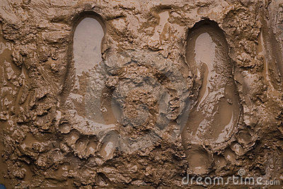
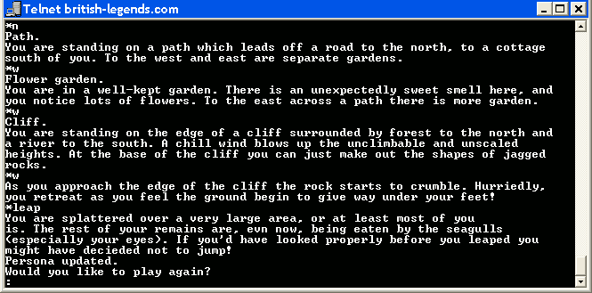
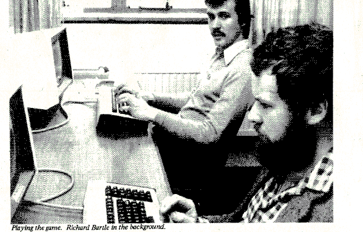
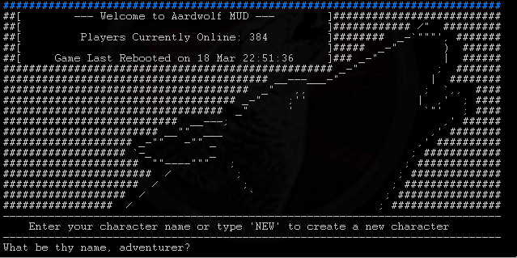
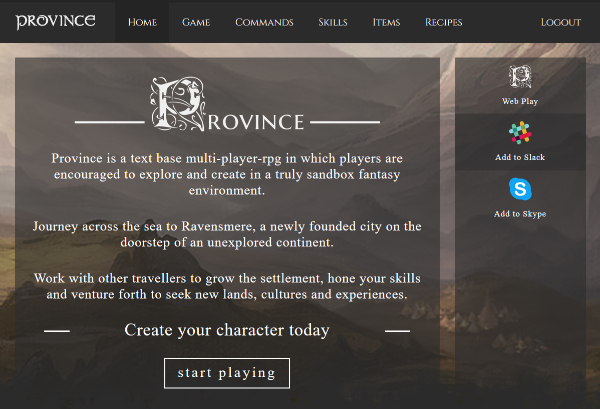
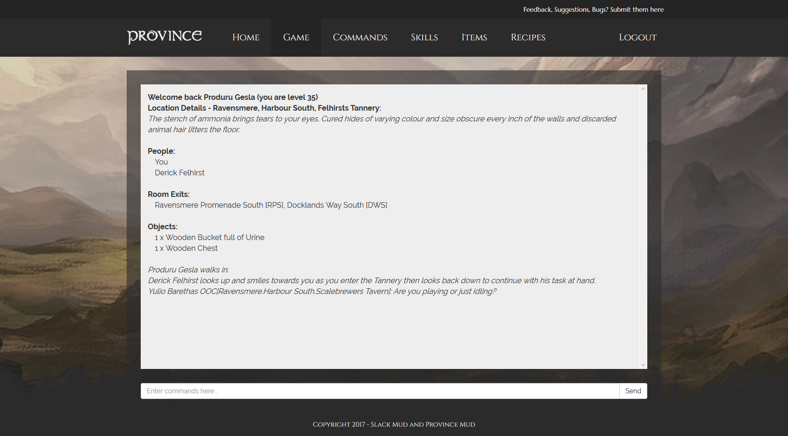
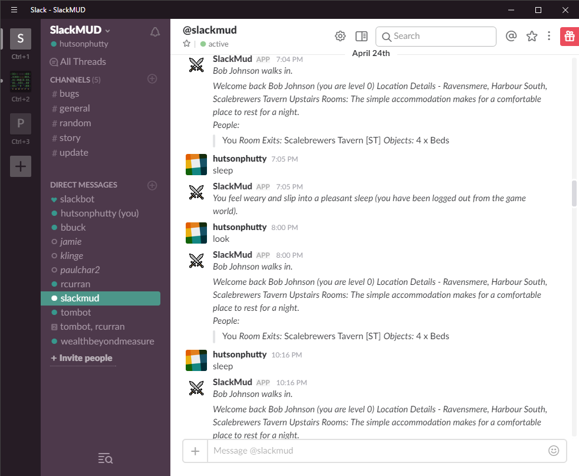
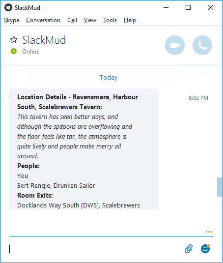
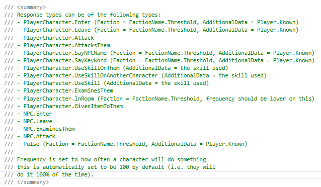
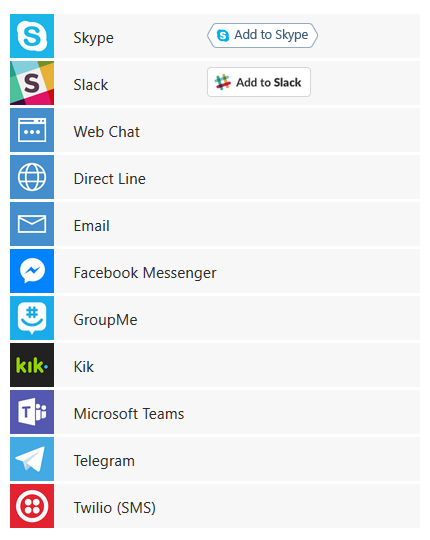

Province Mud / Slack Mud
The Murky World of Text Gaming
Created by Paul Hutson, Rob Curran and Tom Lee
Overview
- Introduction to Muds
- Province / Slack Mud
- The Tech
- The Future
MUD?

MUD - Text Based Gaming

1978/9

The Genre Changes
ASCII Art - a revolution...
MUSHes / MOOs / Ultima Online / Everquest / World of Warcraft
Our Twist
- Available via modern methods (Skype, Slack, Facebook Messenger, the Web)
- Easily hosted on a cloud platform - with minimum set up
Province / SlackMud?

Access to the Game
Via Skype, Slack, The Web
Facebook Messenger, Twilio, many more...
Access to the Game
Web Client

Access to the Game
SlackMud Bot

Access to the Game
Skype SlackMud Bot

Interacting with the Game World
World Building
Locations
[NEED A MAP!]
70 locations to find and explore in the game world.
World Building
Non Player Characters (NPCs - the bots of our world)
Named Characters i.e. Derick Felhirst, the Tanner.
Generic Characters / Animals i.e. Beggars, Guards, Rabbits
World Building
Conversation System enabling reactions to various triggers:

30 NPC Types in the game as of Tuesday - could mean 100's in the world at any one time
World Building
Quests/Jobs/Tasks
12 story's written for the world with varying things to do...
World Building
Skills - i.e. what can people do within the world
23 unique skills for things like using various weapons, fletching arrows, leatherwork, tanning, mining, brawling, learning magic, etc...
World Building
Crafting - Recipes, resources, creation of objects in game
71 types of object, from buckets and plants through to swords and furniture.
16 recipe's (some recipes will make multiple items depending on the command you use.. and they all use a skill).
The Game Engine
Not just a game... it's actually an engine that we've built a game on top of...
... entirely configurable with .JSON files
The Technology

C#.net

Bot Framework
Bot Framework - Other Services

Azure Platform
Where next?
Thanks...
Many people have helped out with play testing of the game / feedback on what works and what doesn't!